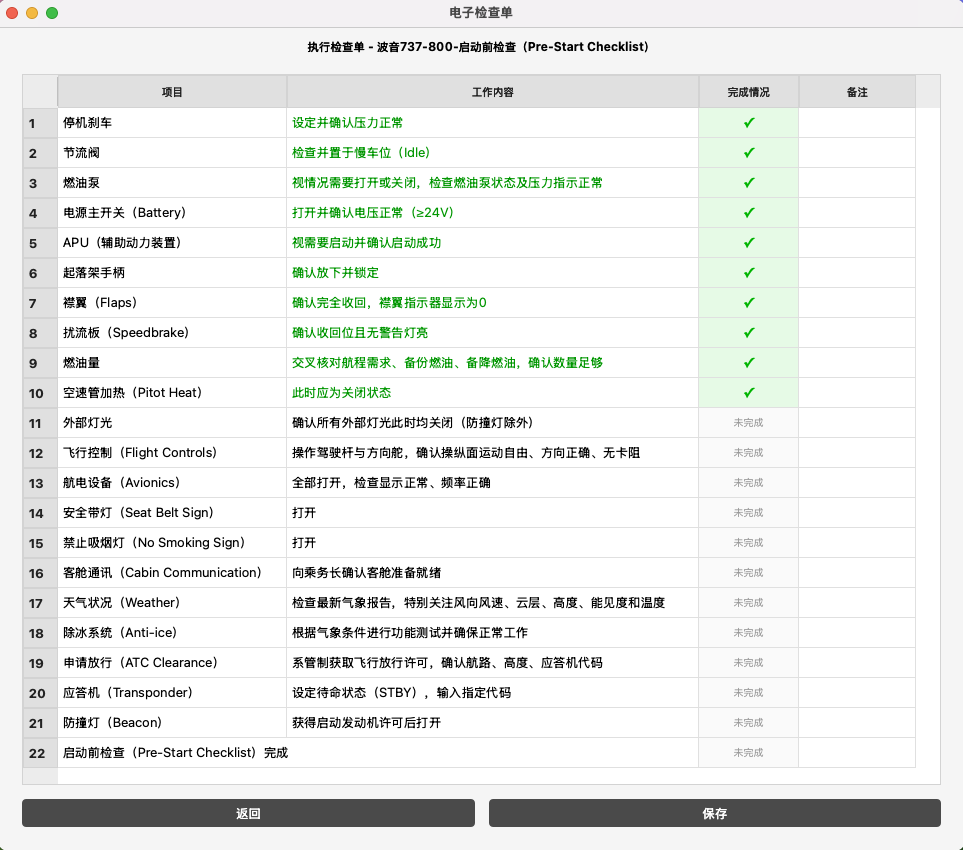
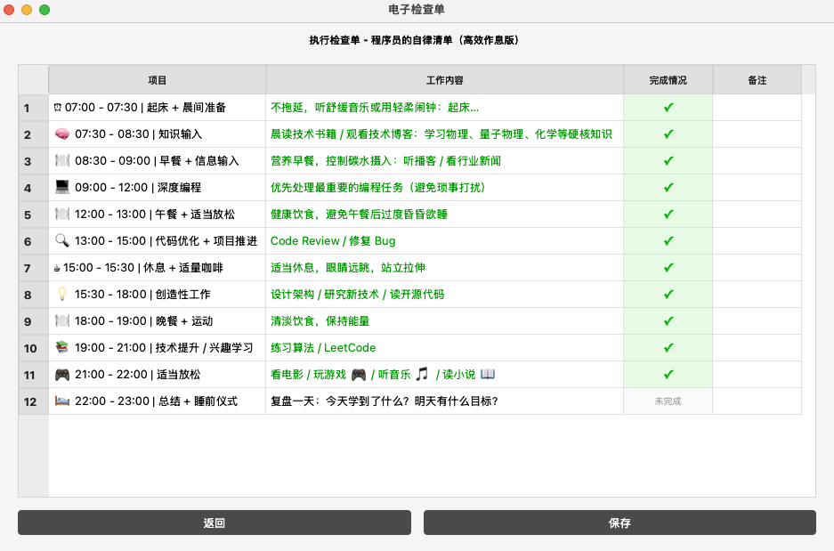

每架飞机，都有一张进程单。
电子进程单实时显示航班、进离港状态、高度、速度和跑道。点击航班，随时接手指挥。
从一架飞机的起降，到一片空域的有序运行。
现在，换你坐在雷达屏幕前。
在海湾机场熟悉雷达标牌、航向、高度与速度，从新手教学开始你的第一班执勤。
电子进程单实时显示航班、进离港状态、高度、速度和跑道。点击航班，随时接手指挥。
标准进离场程序、航路点直飞与空中等待，配合航向、高度和速度，把航班排进合适的顺序。
引导 ILS 进近、放行起飞、复飞与移交。在跑道占用、尾流间隔和不同机场布局中作出判断。
选择机场与难度→选中航班→按钮、文字或 Shift 语音指挥
在线版使用浏览器自带的语音播报与语音识别。推荐 Chrome，管制员优先女声、飞行员优先男声，也可自行选择音色。
可用音色和识别能力因浏览器及系统而异，识别可能需要联网；也能用文字和按钮指挥。进入在线版项目已开源，可从 GitHub 获取代码并按说明本地部署。本地版使用三个模型处理中文播报、英文播报和语音识别，也可自行修改、替换本地语音模型。
网页版直接通过浏览器游玩，无需区分系统版本；本地部署的环境和模型准备方式请查看仓库说明。前往 GitHub · 获取源码保留最初的四帧画面，记录这次升级的起点。以下为 1.0 历史截图。


专业规范·高效执行
《电子检查单》是一款融合了航空航天等特种行业标准执行规范的任务管理和检查软件。将飞行检查单的严谨流程和空中交通管理专业领域的最佳实践，转化为人人可用的高效工作管理工具。
核心特色
• 标准化流程：借鉴飞行和管制专业检查单的严谨结构，将复杂任务转化为可执行的标准步骤
• 强制执行机制：确保每个环节都经过确认，防止遗漏关键步骤
• 灵活模板系统：内置多种行业模板，同时支持自定义创建，适应不同工作场景
• 直观操作界面：简洁清晰的用户界面，降低使用门槛，提高执行效率
适用场景
工作管理、时间规划、流程执行、安全检查
为什么选择《电子检查单》
在当今快节奏的工作环境中，高效且无误的任务执行变得尤为重要。《电子检查单》通过将航空等高风险行业的标准化流程引入日常工作，帮助用户：
- 减少执行偏差，提高工作质量
- 降低认知负荷，专注核心任务
- 建立可靠系统，形成高效习惯
- 实现结构化思考，优化工作方法
版本信息
电子检查单 V1.10 版